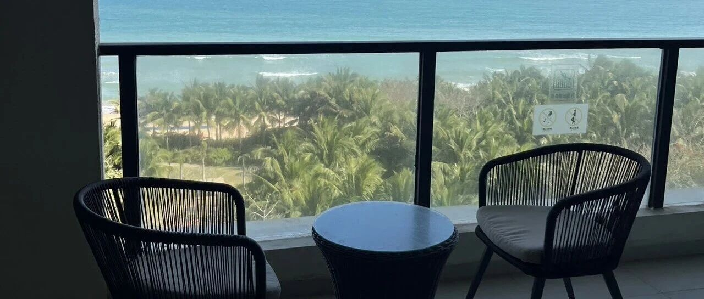

过完年发现：有钱人的烦恼，比你想的多
点击关注 秋秋在分享
一起实现财务自由退休
大家好，我是秋秋呀～
过完年，我发现真正的自由是“有时间为自己而活”。
我们最近在买离开海南的车票，我以为人不多，结果一直到正月十五都没票。
过来很方便，回去却没那么自由。
如果上班，肯定还要提前回去，哪怕创业也被耽误时间。
FIRE就很自由，没有耽误行程一说。
有钱，不等于有自己的时间。
比如狂飙里面的高启强，后面是地方一霸。
然而死了老婆死了弟弟，有个非亲生的孩子还很叛逆……很怕地位不保，不敢离开高管位置。
真正为自己而活的日子并不多。

清代《笑林广记·不愿富》里说：
一鬼托生时，冥王判作富人。鬼曰：“不愿富也，但求一生衣食不缺，无是无非，烧清香，吃苦茶，安闲过日足矣。”
冥王曰：“要银子便再与你几万，这样安闲清福，却不许你享。”
白话译文是：
有个鬼要投胎，冥王判他做富人。
鬼说：“我不想富贵，只求一辈子衣食不愁、没有是非，烧清香、喝苦茶，安安稳稳清闲过日子就够了。”
冥王说：“要银子我再给你几万两，可这样安闲清福，你没资格享。”
世人都羡富贵好，哪知闲人最逍遥。
我从互联网裸辞，从精致牢笼里挣脱出来，就是更在乎“自由时间”。
有些工作我明明很擅长，工资也拿得出手，可这份工作带来的回报，再也没法让我真正心动了。
互联网大厂的反馈机制很直接：做得好，有亮眼的数据、同事的认可、有奖金。
年轻时，这一套就够我撑着熬夜加班、忍受无数情绪内耗。
那时候总觉得，自己在一路向上狂奔，前途一片光亮。可跑着跑着才发现，终点根本不是我当初想象的那扇门。
薪水确实体面，但这笔钱，远没到能让我拍桌说“老子不干了”的程度，更不是能让我潇洒提前退场的底气。
真正让我心里发慌的，也不是最终赚多少钱，而是我的能量和回报，彻底错位了。
从那时候起，我开始认真问自己：如果每周能多一天，只属于我自己，不属于公司，不属于任何人，会发生什么？
我想象过那样的一天：关掉工作提醒，只留一本笔记本，把藏在脑子里的灵感、念头、观察，一条条整理成能落地的想法和方向；不接电话，不回消息，专心做自己喜欢的事。
亲手搭建自己世界的满足感，是任何一张工资单都给不了的。
有人说，不还是在搞钱？
对我来说，FIRE是说不的权利不做的自由。
如果很有钱，却不能自由选择喜欢的人，想做的事，也不是幸福。
我不想再做别人的系统里拼命奔跑的执行者，而想变成拥有自己系统的创造者。
真正让我下定决心的，最后是身体原因。
我意识到工作带来了各种结节，才鼓足勇气。
财富自由从来不是简单的FIRE，不是攒够一笔钱就躺平不动。
真正的自由，是你有底气选择怎么花时间，有能力把精力投给真正让你发光的事，有心情在平凡的日子里，为自己多停留一会儿。
现在的我，更在意的是今天有没有留出时间，做一件只让自己开心的事。
如果你们也想走上这条路，不用等所谓“准备好”。从现在开始，把那片只属于自己的时间开始。
先拥有属于自己的时间，才会慢慢拥有属于自己的人生。
清闲又不缺钱，就是富足。
对了，最近开心的事是住了快三个月酒店，已经成为大部分平台铂金会员。
随便定个房间都能升级套房～

很爽～